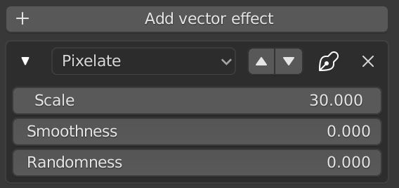

Vector FX

In the Layer settings, you can add vector fx for the selected layer. These are per channel and don't exist for the Layer channel. Vector fx are applied to the vector input of a texture, meaning you need to have a texture on the channel you want a vector effect for.
You can stack multiple vector effects. Then you can move them with the arrow buttons. You can select the effect type from the dropdown on each effect. You can also hide or remove a them.